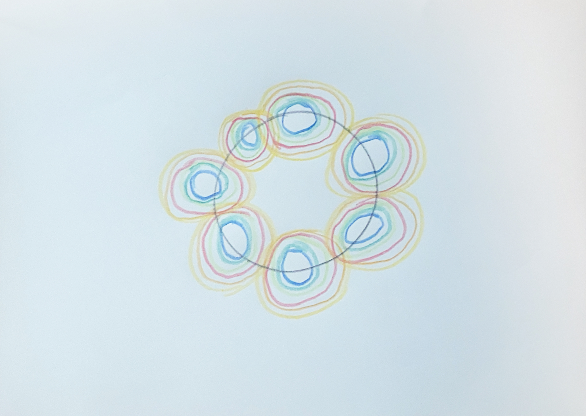
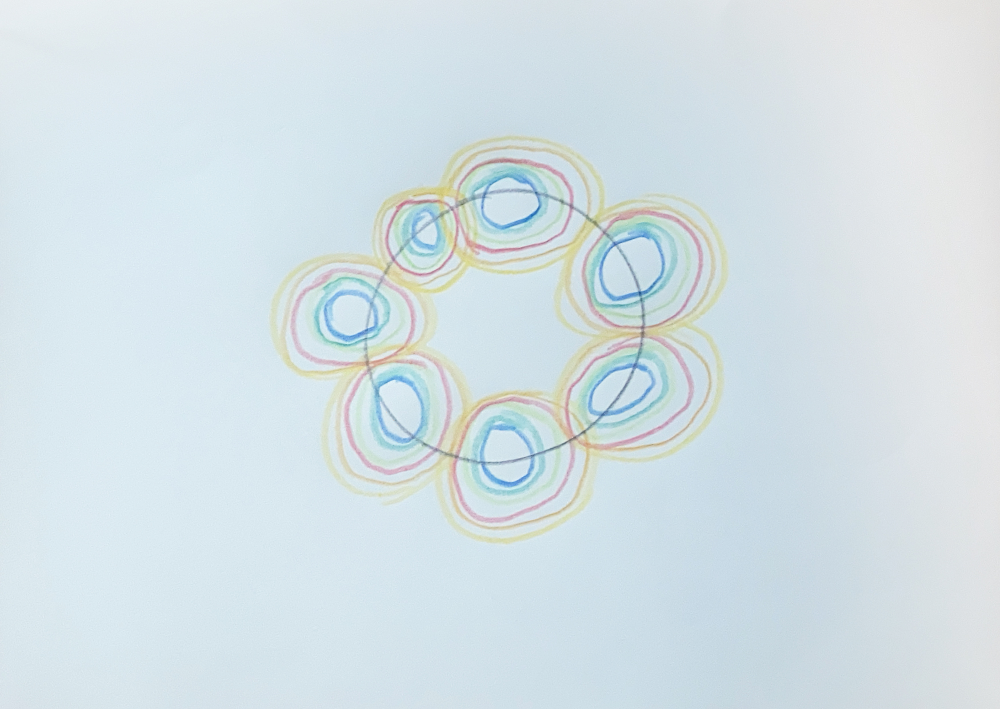
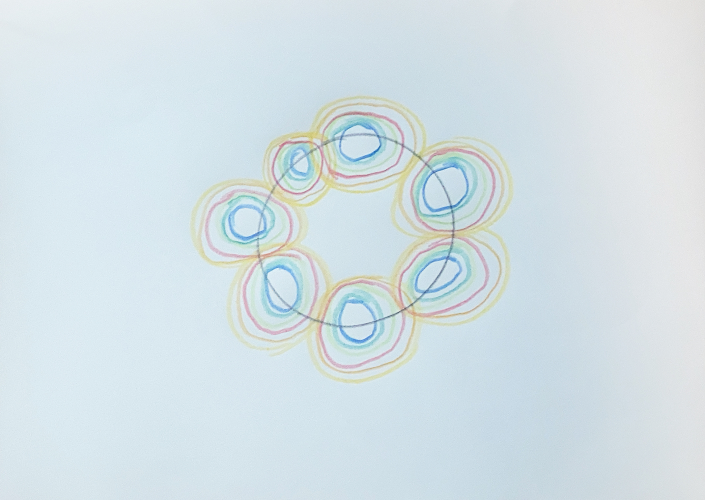

analog algorithm

In this task, we had to write an algorithm and have different people execute it. In my algorithm, a wreath of seven circles in the seven colors of the rainbow was to be drawn. In both attempts, I had to rewrite my original algorithm twice to achieve the desired result.
What I learned from this task is that instructions must be very precise and formulated in a way that is objectively understandable for everyone. These insights could later be transferred to programming. The task of the analog algorithm illustrated this principle well and simply.